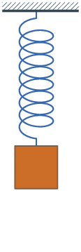

Getaran Selaras
PENGERTIAN

Besaran Utama pada Getaran Selaras
a. Frekuensi (f)
\( f\) = frekuensi (Hz)
n = banyaknya getaran
t = waktu (s)
b. Perioda (T)
\( T\) = perioda (s)
t = waktu (s)
n = banyaknya getaran
Perhatikan animasi perbandingan 2 pegas berikut!!

Berdasarkan animasi diatas diketahui:
a. Pegas 1 memiliki frekuensi lebih besar
b. Pegas 2 memiliki periode lebih lama
Contoh Soal:
Ketika melewati jalan berlubang, shockbreaker sepeda motor bergetar 8 kali dalam 10 detik. Tentukan
a. Periode getaran pegas shockbreaker
b. Frekuensi getaran pegas shockbreaker
jawab:
diketahui :
n = 8
t = 10 detik
a. Periode getaran pegas shockbreaker
jawab:
\( T = \frac {10}{8} \)
\( T = 1,25 \ s \)
b. Frekuensi getaran pegas shockbreaker
jawab:
\( T = \frac {8}{10} \)
\( f = 0,8 \ Hz \)
c. Amplitudo Getaran (A)
Amplitudo merupakan simpangan terjauh getaran
d. Simpangan Getaran (Y)
e. Kecepatan Sudut ( \( \omega \) = omega )
\( \omega \) = kecepatan sudut (rad/s)
T = perioda (s)
f = frekuensi (Hz)
f. Sudut Fase Getaran ( \( \theta \) = teta )
\( \theta = \frac{2 \pi }{T} {t} + \theta_0 \)
\( \theta = {2 \pi} (\frac {t}{T} + \frac {\theta_0}{2 \pi}) \)
\( \theta = {2 \pi}{\psi}\)
\( \theta \) = sudut fase getaran
\( \omega \) = kecepatan sudut (rad/s)
t = waktu sesaat (s)
\( \theta_0 \) = Sudut awal fase getaran
T = waktu dalam satu getaran penuh (s)
\( \psi \) = Fase getaran
g. Fase Getaram ( \( \psi \) = psi )
\( \psi \) = Fase getaran
t = waktu (s)
\( \theta_0 \) = Sudut awal fase getaran
T = waktu dalam satu getaran penuh (s)
\( \theta \) = sudut fase getaran
Persamaan Getaran Selaras
a. Simpangan Getaran (Y)
Y = simpangan getaran
A = Amplitudo
t = waktu (s)
\( \theta_0 \) = Sudut awal fase getaran
\( \omega \) = kecepatan sudut getaran
b. Kecepatan Getaran Saat Simpangannya Sebesar Y (vy)
\( v_y = \frac{d}{d_t} (A \ sin ({\omega t} \ + \ { \theta_0}) ) \)
\( v_y = {\omega}\ A\ cos ({\omega t} + { \theta_0}) \)
\( v_y\) = kecepatan getaran saat simpangan Y (m/s)
Y = simpangan getaran
t = waktu (s)
\( \theta_0 \) = Sudut awal fase getaran
\( \omega \) = kecepatan sudut getaran
c. Percepatan Getaran Saat Simpangannya Sebesar Y (vY)
\( a_y = \frac{d}{d_t} ({\omega} A cos ({\omega t}\ +\ { \theta_0}) ) \)
\( a_y = - {\omega ^2}\ A\ sin ({\omega t} + { \theta_0}) \)
\( a_y\) = percepatan getaran saat simpangan Y( \( \frac {m}{s^2}\))
Y = simpangan getaran
t = waktu (s)
\( \theta_0 \) = Sudut awal fase getaran
\( \omega \) = kecepatan sudut getaran
d. Energi Getaran
1. Energi Potensial (Ep)
\( E_p = \frac {1}{2} m \ {\omega ^2} (A\ sin\ {\omega t})^2\)
Y = simpangan getaran
t = waktu (s)
A = Amplitudo
k= nilai ketetapan atau konstanta (N/m)
\( \omega \) = kecepatan sudut getaran (rad/s)
m = massa (kg)
2. Energi kinetik (Ek)
\( E_k = \frac {1}{2} m \ {\omega ^2} (A\ cos\ {\omega t})^2\)
Y = simpangan getaran
t = waktu (s)
A = Amplitudo
k= nilai ketetapan atau konstanta (N/m)
\( \omega \) = kecepatan sudut getaran (rad/s)
m = massa (kg)
3. Energi Mekanik (Em)
\( E_m = \frac {1}{2} m \ {\omega ^2} (A\ cos\ {\omega t})^2\) + \( \frac {1}{2} m \ {\omega ^2} (A\ sin\ {\omega t})^2\)
\( E_m = \frac {1}{2} m {\omega}^2 {A^2} \)
Y = simpangan getaran
t = waktu (s)
A = Amplitudo
k= nilai ketetapan atau konstanta (N/m)
\( \omega \) = kecepatan sudut getaran (rad/s)
m = massa (kg)
Reviews

Amin Tofa
kerja bagus. sayas belajar banhyak dari website ini dan sangat membantu saya untuk belajar fisika
Amin Tofa
kerja bagus. sayas belajar banhyak dari website ini dan sangat membantu saya untuk belajar fisika
Amin Tofa
kerja bagus. sayas belajar banhyak dari website ini dan sangat membantu saya untuk belajar fisika